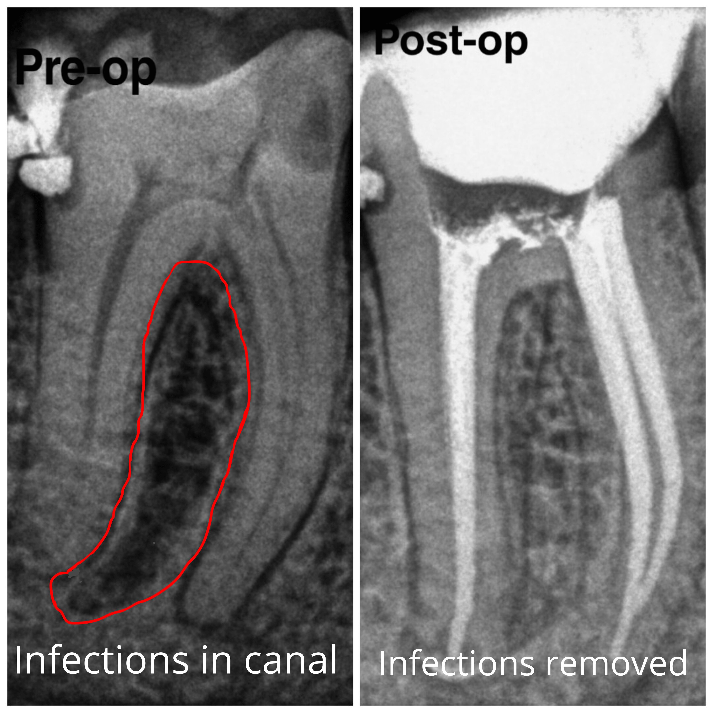
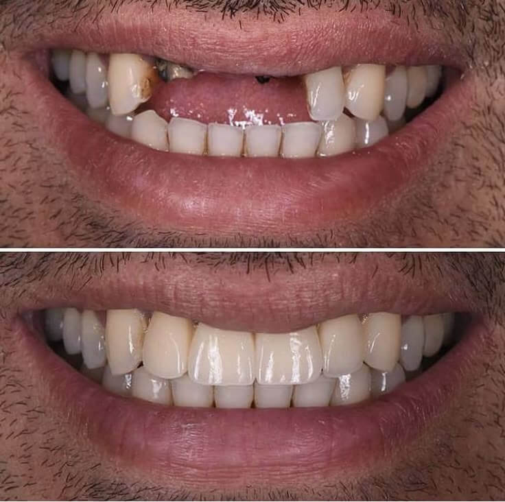
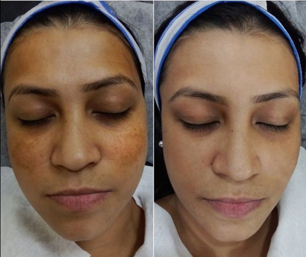

🦷 DENTAL SERVICES
Root Canal Treatment - Specialist Endodontics
Expert root canal specialist treatment performed by Dr. Zuber Shaikh with 500+ successful cases. Single-visit root canal with temporary crown placement when possible. Designed to minimize pain using advanced technique and proper anesthesia. Saves natural tooth and prevents extraction.

Emergency Dental Care - Immediate Pain Relief
Same-day emergency root canal treatment for severe tooth pain and infections. Available Monday to Saturday 11 AM - 9 PM. Immediate pain assessment and relief. Emergency extractions performed when necessary. Comprehensive infection management.
Dental Filling - Cavity Treatment
Advanced tooth-colored composite fillings that match natural tooth shade. Designed to minimize discomfort during cavity removal and restoration. Durable fillings with lifespan of 5-10 years. Prevents further decay and tooth damage.
Tooth Extraction - Gentle Removal
Gentle tooth extraction using advanced surgical technique and proper anesthesia. Wisdom tooth removal. Comfortable extraction experience with minimal post-extraction discomfort. Post-operative care instructions provided.
Teeth Cleaning & Scaling - Professional Hygiene
Professional teeth cleaning and scaling to remove tartar and plaque buildup. Prevents gum disease and tooth decay. Polishing for brighter smile appearance. Recommended every 6 months for optimal oral health.
Professional Teeth Whitening - Enhanced Brightness
Professional in-office teeth whitening using advanced bleaching technology. Safe and effective. Results visible in single session. Advanced LED technology for optimal whitening.
Dental Implants - Permanent Tooth Replacement
Experienced team of surgeons performs advanced dental implant placement. Permanent tooth replacement that functions like natural teeth. Durable titanium implants with high success rate. Comprehensive implant care from planning to final crown.

Crown & Bridge - Restorative Prosthodontics
Custom-fabricated crowns and bridges to restore damaged or missing teeth. Excellent aesthetic match with natural teeth. Durable restorations lasting 10-15 years. Lab fabrication ensures perfect fit and appearance.
Kids Dentistry - Pediatric Dental Care
Gentle, child-friendly dental care for kids of all ages. Cavity prevention and treatment. Encouraging positive dental habits from early age. Dr. Zuber's friendly approach makes dental visits comfortable and positive.
Wisdom Tooth Removal - Expert Surgical Extraction
Expert surgical removal of impacted or problematic wisdom teeth. Gentle extraction with proper anesthesia. Minimal post-operative swelling with detailed care instructions. Experienced in complex wisdom tooth cases.
Orthodontic Treatment - Smile Straightening
Teeth straightening and bite correction using braces or clear aligners. Improves appearance and oral health. Treatment duration varies by complexity. Dr. Zuber provides comprehensive orthodontic planning.
✨ AESTHETIC & SKIN SERVICES
HydraFacial - Advanced Facial Treatment
Professional-grade HydraFacial for deep skin rejuvenation and hydration. Minimally invasive procedure with zero downtime. Visible glowing results. Uses vortex-fusion technology for deep cleansing, hydration, and antioxidant infusion. Results last 3-4 weeks. Monthly treatments maintain optimal skin health. Perfect for all skin types including sensitive skin.

Skin Glow Injection - Glutathione Brightening
Advanced skin brightening using Glutathione injections. Safe, effective brightening treatment. Reduces dark spots and uneven skin tone. Results visible within 4-8 weeks. Multiple sessions recommended for optimal results. Advanced formula for maximum skin glow and radiance.

Medi-Facials - Professional Skin Treatments
Advanced medical-grade facials including HydraFacial, Korean Glass Skin, Pumpkin, BB Glow facials. Customized treatment based on skin type and concerns. Professional results in single session. Zero downtime treatments.
Laser Acne Scar Treatment - Scar Reduction
Advanced laser technology to reduce appearance of acne scars. Stimulates collagen production for skin remodeling. Multiple sessions for optimal results. Safe for all skin types. Significant improvement visible after treatment course.

Chemical Peeling - Deep Skin Rejuvenation
Professional chemical peels for deep skin exfoliation and rejuvenation. Removes damaged outer skin layers. Improves texture, tone, and appearance. Multiple peel strengths available for different skin concerns.
BB Glow - Long-Lasting Tinted Skin Treatment
Semi-permanent BB glow treatment providing tinted, glowing skin finish. Lasts 2-3 weeks. No-makeup makeup appearance. Minimally invasive and quick procedure. Natural-looking coverage with healthy glow.
Anti-Aging Treatments - Youthful Appearance
Advanced anti-aging treatments including Botox for wrinkles, dermal fillers for volume, and skin tightening procedures. Reduces fine lines and restores youthful appearance. Natural-looking results with minimal downtime.
Mole & Warts Removal - Safe Surgical Removal
Safe and effective removal of unwanted moles, warts, and skin tags. Dermatological-grade removal techniques. Minimal scarring. Proper post-operative care for optimal healing.
💇 HAIR RESTORATION SERVICES
Hair PRP Treatment - Natural Hair Growth Stimulation
Advanced platelet-rich plasma therapy for hair loss and regrowth. Uses patient's own growth factors to stimulate follicles. Completely natural and safe. Multiple sessions for optimal results. Visible improvement in hair density within 3-4 months.

Hair GFC - Growth Factor Concentrate Therapy
Advanced growth factor concentrate treatment for hair loss and thinning. Enhanced version of PRP with higher growth factor concentration. Stimulates dormant hair follicles for regrowth.
Hair Mesotherapy - Nutrient Injection Therapy
Microinjection of nourishing serums directly into scalp for hair strengthening. Provides essential nutrients to hair follicles. Reduces hair fall and improves hair quality. Multiple sessions for optimal results.
Hair Threads - Scalp Tightening & Regrowth
Advanced PDO thread technology for scalp lifting and hair follicle stimulation. Tightens scalp and improves blood circulation. Stimulates natural hair growth. Results last 12-18 months.
Laser Hair Removal - Permanent Hair Reduction
Advanced diode laser technology for permanent hair reduction on face and body. Safe for all skin types. Minimally invasive procedure with cooling technology. 6-8 sessions for optimal results. Results last for extended periods.